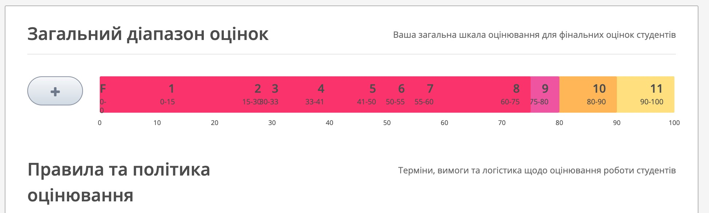

Як налаштувати оцінювання на ВШО
У цій статті я коротко описую, як працює оцінювання на платформі Всеукраїнська школа онлайн (ВШО), яка побудована на Open edX. Як приклад беру курс Німецька мова 10 клас підручник: в ньому є розділ Інтерактивний електронний додаток з уроками Lektion 1–8, а в кожному уроці — вправи (Übung).
Оцінювання складається з трьох частин: що оцінюється (налаштування в Studio), як рахується оцінка і де вчитель бачить результати (журнал оцінювання).
Як рахується оцінка
- Кожна вправа дає стільки балів, скільки в ній правильних відповідей: 1 бал за кожну правильну відповідь.
- Оцінка за урок — це відсоток від усіх можливих балів уроку. Наприклад, у Lektion 1 можна набрати 36 балів; якщо учень набрав 29 — це 81 %.
- Загальна оцінка курсу — середнє значення з усіх уроків.
- Відсотки переводяться в оцінку за 12-бальною шкалою (див. нижче).
Крок 1. Політика оцінювання курсу
У Studio відкрийте Налаштування → Оцінювання. За замовчуванням там стоять типи завдань Homework, Lab, Midterm Exam і Final Exam — вони не підходять для нашого курсу, тому я їх видалив і створив два типи завдань: для вправ інтерактивного додатка і для діагностувальних робіт.
Інтерактивний додаток (тренувальні вправи, кількість спроб не обмежена):
- Назва типу завдання: Інтерактивний додаток
- Абревіатура: ІД
- Вага загальної оцінки: 100 %
- Загальна кількість: 8 (кількість уроків)
- Кількість завдань, які можна пропустити: 0
Діагностувальна робота (одна спроба):
- Назва типу завдання: Діагностувальна робота
- Абревіатура: ДР
- Вага загальної оцінки: 0 % — поки діагностувальних робіт у курсі немає
- Загальна кількість: 1
- Кількість завдань, які можна пропустити: 0
Вага 0 % означає, що тип уже є, але на загальну оцінку не впливає. Коли з’являться діагностувальні роботи, вагу можна перерозподілити, наприклад ДР — 100 %, ІД — 0 %: тоді вправи залишаться видимими в журналі, але оцінка рахуватиметься лише з діагностувальних робіт.
Увага: якщо перейменувати тип завдання, підрозділи, які були до нього прив’язані, не переходять на нову назву автоматично. Кожному підрозділу треба заново вибрати тип у полі Оцінювати як і опублікувати його, інакше загальна оцінка стане 0 %.
Важливо, щоб кількість у політиці збігалася з кількістю уроків, які справді оцінюються. Інакше система рахує нулі за уроки, яких немає, і оцінка занижується.
Крок 2. Які уроки оцінюються
Оцінювання вмикається на рівні підрозділу. У структурі курсу натисніть іконку налаштувань біля підрозділу Lektion 1 і в полі Оцінювати як виберіть Інтерактивний додаток. Повторіть для всіх уроків. Інструкцію, аудіосупровід і PDF підручника я залишив неоцінюваними.
Крок 3. Вага вправ: 1 бал = 1 відповідь
Скільки балів дає вправа, визначає поле Вага (Weight) у налаштуваннях компонента. Щоб кожна правильна відповідь давала рівно 1 бал, вага має дорівнювати кількості відповідей у вправі. Наприклад, у вправі Mark the Words треба знайти 5 слів — ставимо вагу 5; у вправі з 12 випадними списками — вагу 12.
Я перевірив усі вправи курсу й знайшов кілька, де вага не збігалася з кількістю відповідей (наприклад, вага 4 при 5 питаннях) — їх треба виправити.
Крок 4. Публікація
Зміни в Studio (оцінювання підрозділів, ваги вправ, нові файли H5P) потрапляють до учнів лише після публікації. Не забудьте натиснути Опублікувати. Перевірити результат можна на вкладці Прогрес у курсі: там видно колонки ІД 01 – ІД 08, бали за кожну вправу й загальний відсоток.
12-бальна шкала
За вимогами редакції відсоток правильних відповідей переводиться в оцінку так:
- 100 % — 12
- 90–99 % — 11
- 80–89 % — 10
- 75–79 % — 9
- 60–74 % — 8
- 55–59 % — 7
- 50–54 % — 6
- 41–49 % — 5
- 33–40 % — 4
- 29–32 % — 3
- 15–28 % — 2
- 0–14 % — 1
У першій версії таблиці редакції 29 % не потрапляли в жодну оцінку; редакція уточнила, що 29 % — це оцінка 3.
Ці межі я записав у Загальний діапазон оцінок курсу, тож система сама рахує загальну оцінку від 1 до 12 (наприклад, 71 % — це 8). Кілька нюансів:
- Оцінка 1–12 ставиться лише за весь курс (середнє з усіх уроків). За окремий урок система показує відсотки — їх учитель переводить за таблицею сам.
- Стандартний повзунок у Studio не дає зручно створити 12 рівнів, тому шкалу я записав напряму через налаштування курсу. Не змінюйте її вручну на сторінці Оцінювання — повзунки можуть зіпсувати рівні.
- На шкалі в Studio видно лише 11 смуг: оцінка 12 відповідає рівно 100 %, тому її смуга має нульову ширину. Але вона працює.
Щоб таблиця завжди була перед очима, я додав до курсу окрему сторінку Оцінювання з поясненням і таблицею переведення.

Де вчитель бачить оцінки
Учитель працює не в оригінальному курсі, а у своїй копії. Щоб її створити: Мій кабінет → Запросити учнів та учениць на курс → оберіть клас, предмет і назву курсу → Готово.
Журнал знаходиться так: Мій кабінет → Управління курсами → картка курсу → Запросити учнів та учениць → вкладка Управління курсом → Оцінювання → Переглянути журнал оцінок.
- У журналі одна колонка на кожен оцінюваний урок, значення — у відсотках.
- Клік на ім’я учня відкриває детальний прогрес з балами за кожну вправу.
- Онлайн-журнал працює, якщо на курсі не більше 100 учнів.
- На тій самій вкладці можна виправити бал учня або дати йому додаткову спробу (Коригувати результат).
Підводні камені з вправами H5P
Під час налаштування я натрапив на кілька проблем, які варто знати заздалегідь:
- Нові експорти з сайту H5P не працюють на ВШО. ВШО використовує старіший програвач H5P, а свіжі вправи (наприклад, з h5p.com) містять нові бібліотеки — кнопки Überprüfen і Wiederholen стають невидимими, а учень не може перевірити відповідь. Такі файли треба переробити на старіші версії бібліотек.
- Одна вправа H5P на юніт. Якщо в одному юніті два блоки H5P, програвач плутає їхні файли: одна з вправ випадково не показується або в неї зникає звук.
- Вправа має передавати бал. Бал у журнал потрапляє, коли вправа після перевірки надсилає подію xAPI. Так роблять стандартні вправи H5P (Drag and Drop, Mark the Words, Drag the Words, Single Choice Set) і наші власні типи вправ (перевірено: 16 з 16 балів у Прогресі). Вправа, вбудована через iframe, бал не передає.
- Вправи, підключені через LTI до h5p.com, перестали працювати після того, як доступ до сайту закінчився. Їх краще завантажувати як файл H5P безпосередньо на ВШО.